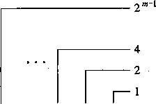
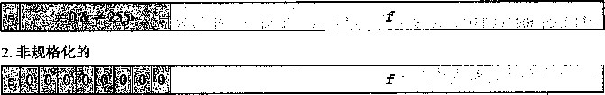
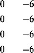

y >>= 3; /* Arithmetic shift */
return x+y;
}
M和N的值为多少？
关于整数运算的最后思考
正如我们看到的，计算机执行的“整数”运算实际上是一种模运算形式。表示数字的有限字 长限制了可能的值的取值范围，结果运算可能溢出。我们还看到，补码表示提供了一种既能表示 负数也能表示正数的灵活方法，同时使用了与执行无符号算术相同的位级实现，这些运算包括加 •法、减法、乘法，甚至除法，无论运算数是以无符号形式还是以补码形式表示的，都有完全一样 或者非常类似的位级行为。
我们看到了 C语言中的某些规定可能会产生令人意想不到的结果，而这些可能是难以察觉 和理解的缺陷的源头。我们特别看到了 unsigned数据类型，虽然它概念上很简单，但可能导 致即使是资深程序员都意想不到的行为。我们还看到这种数据类型会以出乎意料的方式出现，比 如，当书写整数常数和当调用库函数时。
_练习题2.44假设我们在对有符号值使用补码运算的32位机器上运行代码。对于有符号值使用的是 算术右移，而对于无符号值使用的是逻辑右移。变量的声明和初始化如下：
int x = foo(); /* Arbitrary value */
int y = bar(); /* Arbitrary value */
unsigned ux = x; unsigned.uy = y;
对于下面每个C表达式 ， 1)证明对于所有的x和y值，它都为真（等于1);或者2)给出使得 它为假（等于0)的x和y的值：
(x > 0)丨丨（x-1 < 0)
(x&7) !=7 I I (x<<29<0)
(x * x) >= 0
x < 0 丨 I -x <= 0
x > 0 I | -x >= 0
x+y == uy+ux
+ uy*ux == -x
2.4 浮点数
▽ 浮点表示对形如的有理数进行编码。它对执行涉及非常大的数字（|州》0)、非常 接近于0 (|F|«1)的数字 ， 以及更普遍地作为实数运算的近似值的计算，是很有用的。
直到20世纪80年代，每个计算机制造商都设计了自己的表示浮点数的规则，以及对浮点数 执行运算的细节。另外，它们常常不会太多地关注运算的精确性，而把实现的速度和简便性看得 比数字精确性更重要。
大约在1985年，这些情况随着IEEE标准754的推出而改变了，这是一个仔细制订的表示 浮点数及其运算的标准。这项工作是从1976年开始由Intel赞助的 ， 在8087设计的同时,8087 是一种为8086处理器提供浮点支持的芯片。他们请William Kahan (加州大学伯克利分校的一位 教授）作为顾问，帮助设计未来处理器浮点标准。他们支持Kahan加入一个IEEE资助的制订工 业标准的委员会。这个委员会最终釆纳的标准非常接近于Kahan为Intel设计的标准。目前 ， 实 际上所有的计算机都支持这个后来被称为IEEE浮点的标准。这大大提髙了科学应用程序在不同 机器上的可移植性。
IEEE
电气和电子工程师协会（IEEE——读做“Eye-Triple-Eee”）是一个包括所有电子和计算机技 术的专业团体。它出版刊物，举办会议，并且建立委员会来定义标准，内容涉及范围从电力传输 到软件工程。
在本节，我们将看到在IEEE浮点格式中是如何表示数字的。我们还将探讨舍入（rounding) 的问题，当一个数字不能被准确地表示为这种格式时，就必须向上调整或者向下调整，此时就会 出现舍入。然后，我们将探讨加法、乘法和关系运算符的数学属性。许多程序员认为浮点数没意 思，往坏了说，深奥难懂。我们将看到，因为IEEE格式是定义在一组小而一致的原则上的，所 以它实际上是相当优雅和容易理解的。
二进制小数
理解浮点数的第一步是考虑含有小数值的二进制数字。首先，让我们来看看更熟悉的十进制 表示法。十进制表示法使用的表示形式为：4/4-1…办其中每个十进制数4的取 值范围是0〜9。这个表示方法描述的数值定义如下：
m
d= 10, x 屯
i—-n
数字权的定义与十进制小数点符号相关，这意味着小数点左边的数字的权是10的正 幕，得到整数值，而小数点右边的数字的权是10的负幂，得到小数值。例如，12.3七。表示数字
x 10 1 + 2 x 10° + 3 x 10- 1 + 4 x 10- 2 = 12 晶。
类似地，考虑一个形如的表示法，其中每个二进制数字，或者 称为位， b t 的取值范围是0和1,如图2-30所示。这种表示方法表示的数 b 定义如下：
b=Y d 2 i xb i ( 2 _ 19 )
i=—n
符号现在变为t二进制的点，点左边的位的权是2的正幂，点右边的位的权是2的负幂。 例如，101.11 2 表示数字lx 22 + (^- + 1 x 20 + :^24 + ^ 2-2 = 4 + 0 + 1+1 + ^ = 5^
2 m

b m b m -\ • • • b 2 b x b Q • b. x b- 2 b- z • • • b- n -i b-„
1/8 -
l/2 n ~ l -J .
m n ：
图2-30小数的二进制表示。二进制点左边的数字的权形如2 f ,而右边的数字的权形如l/2 f
从等式（2-19)中可以很容易地看出，二进制小数点向左移动一位相当于这个数被2除。例 如，101.11 2 表示数5|,而10.111 2 表示数2 + 0+-+$ +备=2|。类似地，进制小数点向右 移动一位相当于将该数乘2。例如1011.1 2 表示数8 + 0 + 2 + 1+ | = 11士。
注意，形如0.11…1 2 的数表示刚好小于1的数。例如，0.111111 2 表示我们将用简单的 表达法1.0-S来表7K这样的数值。 假定我们仅考虑有限长度的编码，3P么十进制表示法不能准确地表达像i和I这样的数。类似 地，小数的二进制表示法只能表示那些能够被写成；cX27的数。其他的值只能够被近似地表示。 例如，数字|可以用十进制小数0.20精确表示。不过，我们并不能把它准确地表示为一个二进制 小数，我们只能近似地表示它，增加二进制表示的长度可以提髙表示的精度：
表示 |
值 |
十进制 |
0.0 2 |
0 2 |
O-Oio |
0.01 2 |
1 ? |
0.25^0 |
0.010 2 |
2 8 |
0.25io |
0.0011 2 |
3 \E |
0.1875 10 |
0.00110 2 |
6 32 |
0.1875 10 |
0.001101 2 |
13 m |
0.203125 10 |
0.0011010 2 |
26 155 |
0.203125 10 |
0.00110011 2 |
m |
0.19921875 10 |
®练习题 2.45填写下表中的缺失的信息：
小数值 ■ |
二进制表示 |
十进制表示 |
l |
0.001 |
0.125 |
3 4 |
||
25 TE |
||
10.1011 |
||
1.001 |
||
5.875 |
||
3.1875 |
® 练习题 2.46浮点运算的不精确性能够产生灾难性的后果。
爱国者导弹系统中有一个内置的时钟，其实现类似一个计数器，每0.1秒就加1。为了以秒为 单位来确定时间，程序将用一个24位的近似于1/10的二进制小数值来乘以这个计数器的值。特 别地，1/10的二进制表达式是一个无穷序列0.000110011[0011]… 2 ,其中，方括号里的部分是无 限循环的。程序用值x近似地表示0.1，x只考虑这个序列的二进制小数点右边的前23位：x =
0.00011001100110011001100。（参考练习题2.51,里面有关于如何更精确地近似表示0.1的讨论。）
0.1-X的二进制表示是什么？
,B. 0.1-x的近似的十进制值是多少？
当系统初始启动时，时钟从0开始，并且一直保持计数。在这个例子中，系统巳经运行了大约100 个小时。程序计算出的时间和实际的时间之差为多少？
系统根据一枚来袭导弹的速率和它最后被雷达侦测到的时间，来预测它将在哪里出现。假定飞毛腿 导弹的速率大约是2000米每秒，对它的预测偏差了多少？
通过一次读取时钟得到的绝对时间中的一个轻微错误，通常不会影响跟踪的计算。相反，它应该 依赖于两次连续的读取之间的相对时间。问题是爱国者导弹的软件巳经升级，可以使用更精确的函数 来读取时间，但不是所有的函数调用都用新的代码替换。结果就是，跟踪软件一次读取用的是精确的 时间，而另一次读取用的是不精确的时间[100]。
IEEE 浮点表示
前一节中谈到的定点表示法不能很有效地表示非常大的数字。例如，表达式5 X 2 1W) 是用 101后面跟随100个零组成的位模式来表示。相反地，我们希望通过给定x和j；的值，来表示形 如；cX 27的数。
IEEE浮点标准用(-1/ XMX 2 E 的形式来表示一个数：
•符号（sign) ^决定这个数是负数0=1)还是正数（fO),而对于数值0的符号位解释作 为特殊情况处理。
•尾数（significand) M是一个二进制小数，它的范围是1〜2-或者是0〜1—s。
•阶码(exponent)五的作用是对浮点数加权，这个权重是2的五次幂（可能是负数)。
将浮点数的位表示划分为三个字段，分别对这些值进行编码：
一个单独的符号位s直接编码符号〜
k 位的阶码字段exp = 编码阶码 Eo
n 位小数字段f rac = f n —d 编码尾数M,但是编码出来的值也依赖于阶码字段的值是否 等于0。
图2-31给出了将这三个字段装进字中两种最常见的格式。在单精度浮点格式（C语言中的 float)中，s、exp和frac字段分别为1位、A:=8位和《 = 23位，得到一个32位的表示。 在双精度浮点格式（C语言中的double)中，s、exp和frac字段分别为1位、灸=11位和《 = 52位, 得到一个64位的表示。
单精度
|
31 |
30 |
23 22 |
0 |
|
|
1 |
醒漏議fill |
| ' frac |
||
|
双精度 |
||||
|
63 62 |
52 51 |
32 |
||
|
調國画讓鱺H— ! |
||||
|
31 |
0 |
|||
图2-31标准浮点格式（浮点由3个字段表示，两种最常见的格式是它们 被封装到32位（单精度）和64位（双精度）的字中）
给定了位表示，根据exp的值，被编码的值可以分成三种不同的情况（最后一种情况有两 个变种)。图2-32说明了对单精度格式的情况。
图2-32单精度浮点数值的分类（阶码的值决定了这个数是规格化的、非规格化的、或特殊值）
情况1 :规格化的值
这是最普遍的情况。当exp的位模式既不全为0 (数值0),也不全为1 (单精度数值为
3b. NaN
獲 |
喇 |
ai |
園 |
_議 |
圖圖■圖圖圈■國0國國圖圖圖圖

3a.无穷大
1.规格化的
255,双精度数值为2047)时，都属于这类情况。在这种情况中 ， 阶码字段被解释为以偏置 (biased)形式表示的有符号整数。也就是说，阶码的值是五■历os,其中£是无符号数，其位 表示为而历似是一个等于2H-1 (单精度是127,双精度是1023)的偏置值。由此 产生指数的取值范围，对于单精度是一 126〜+127,而对于双精度是一 1022〜+1023。
对小数字段f rac的解释为描述小数值/，其中0</<1，其二进制表示为0/h"：/；/。，也 就是二进制小数点在最高有效位的左边。尾数定义为M=l+/。有时，这种方式也叫做隐含的以 1开头的（implied leading 1)表示，因为我们可以把M看成一个二进制表达式为I/h/m*"/。的 数字。既然我们总是能够调整阶码孓使得尾数M在范围1 <M<2之中（假设没有溢出），那 么这种表示方法是一种轻松获得一个额外精度位的技巧。由于第一位总是等于1,因此我们就不 需要显式地表示它。
情况2:非规格化的值
当阶码域为全0时，所表示的数就是非规格化形式。在这种情况下 ， 阶码值是五=1-所似， 而尾数的值是M=/,也就是小数字段的值，不包含隐含的开头的1。
对于非规格化值为什么要这样设置偏置值
使阶码值为1-历似而不是简单的-历os似乎是违反直觉的。我们将很快看到，这种方式提 供了 一种从非规格化值平滑转换到规格化值的方法。
非规格化数有两个用途。首先，它们提供了一种表示数值0的方法 ， 因为使用规格化数，我 们必须总是使M>1,因此我们就不能表示0。实际上 ， +0.0的浮点表示的位模式为全0 : 符号 位是0,阶码字段全为0 (表明是一个非规格化值)，而小数域也全为0,这就得到M=/=0。令 人奇怪的是，当符号位为1，而其他域全为0时，我们得到值-0.0。根据IEEE的浮点格式，认 为值+0.0和-0.0在某些方面是不同的，而在其他方面是相同的。
非规格化数的另外一个功能是表示那些非常接近于0.0的数。它们提供了一种属性，称为逐 渐溢出（gradual underflow),其中，可能的数值分布均勻地接近于0.0。
情况3:特殊值
最后一类数值是当指阶码全为1的时候出现的。当小数域全为0时，得到的值表示无穷，当 5 = 0时是+如，或者当时是 -00 。 当我们把两个非常大的数相乘，或者除以零时 ， 无穷能 够表示溢出的结果。当小数域为非零时，结果值被称为“MW”，就是“不是一个数”（Not a Number)的缩写。一些运算的结果不能是实数或无穷 ， 就会返回这样的值，比如当计算
或oo — oo 时。在某些应用中 ， 表示未初始化的数据时，它们也很有用处。
2.4.3数字示例
图2-33展示了一组数值，它们可以用假定的6位格式来表示 ， 有3的阶码位和《 = 2的 尾数位。偏置量是2 3 一 1 -1 = 3。图中的A部分显示了所有可表示的值（除了 JVoAO。两个无穷值
頊 A A A A ~ A ： 一 - A ~ 去 A A AA—-_~ A ~ A~A 4» A 杏 El
一 00 —10 —5 0 +5 +10 +oo
Io规格化的 a非规格化的 m 无穷 | a)完整范围 一 0 +0
\/
4c
A | A
A i ■■~A
—
「
A
—A■■
■_A
丨分
0
分
^j> 0- ■ O ■ 0|~A—At-- A f A
—A
ni
A i
A
^
—1 —0.8 —0.6 —0.4 —0.2 0 +0.2 +0.4 +0.6 +0.8 +1
h 规格化的 △非规格化的 曰~^1
b) -1.0至+1.0之间的值
图2-33 6位浮点格式可表示的值 (k = 3的阶码位 ，n = 2 的尾数位，偏置量为3)
在两个末端。最大数量值的规格化数是±14。非规格化数聚集在0的附近。图的B部分中，我 们只展示了介于-1.0和+1.0之间的数值，这样就能够看得更加清楚了。两个零是特殊的非规格 化数。可以观察到，那些可表示的数并不是均勻分布的——越靠近原点处它们越稠密。
图2-34展示了假定的8位浮点格式的示例，其中有1 = 4的阶码位和《 = 3的小数位。偏置 量是2 4 — 1 -1=7。图被分成了三个区域，用来描述三类数字。不同的列给出了阶码字段是如何编码 阶码五的，小数字段是如何编码尾数M的，以及它们一起是如何形成要表示的值X M 的。从0自身开始，最靠近0的是非规格化数。这种格式的非规格化数的五=1-7 = -6,得到权 2 £ =占。小数/的值的范围是0, |，…，|，，从而得到数 V 的范围是0〜p x | = 士。
值
2 E x M V
指数
位表示
2 e
十进制
E
M
o 15121 预 35127512
01121122 15 15 15 _5 15
018 118 218 318 718 018 118 218 3-8 718
11641S41极 15?164

0.0
0.001953
0.003906
0.005859
0.013672
0 0000 000 0 0000 001 0 0000 010 0 0000 011
0 0000 111
0
最小的非规格化数
最大的非规格化数
815129512141115诏 8-8 918101817928
818 91814181518 8S 9181018 018 118 618 718 018 118 2100
1B41541_2 1_2 11112 -6-6-l-looo 7
^ 0.015625
5¾ 0.017578
\ 0.875
0.9375 1 1.0
| 1.125
| 1.25
224 224.0
最小的规格化数
0 0001 000 0 0001 001
0 0110 110 0 0110 111 0 0111 000 0 0111 001 0 0111 010
0 1110 110
14
T
15
T
14
最大的规格化数
0 1110 111
00
无穷大
0 1111 000
图2-34 8位浮点格式的非负值示例
这种形式的最小规格化数同样有五=1-7=-6，并且小数取值范围也为0，|，...， \。 然而, 尾数的范围在1 + 0= 1和1+ | = f之间，得出数F的范围在备=占和晶之间。
可以观察到最大非规格化数+和最小规格化数&之间的平滑转变。这种平滑性归功于我们 对非规格化数的五的定义。通过将五定义为1 -&仍，而不是-&似，我们可以补偿非规格化数 的尾数没有隐含的开头的1这一事实。
当增大阶码时，我们成功地得到更大的规格化值，通过1.0后得到最大的规格化数。这个数 具有阶码五=7,得到一个权2 £ =128。小数等于|得到尾数M=f。因此，数值是F= 240。超出 这个值就会溢出到+ °°。
这种表示具有一个有趣的属性，假如我们将图2-34中的值的位表达式解释为无符号整数, 它们就是按升序排列的，就像它们表示的浮点数一样。这不是偶然的——IEEE如此设计格式就
是为了浮点数能够使用整数排序函数来进行排序。当处理负数时，有一个小的难点，因为它们有 开头的1,并且它们是按照降序出现的，但是不需要浮点运算来进行比较也能解决这个问题（参 见家庭作业2.83)。
®练习题2.47假设一个基于IEEE浮点格式的5位浮点表示,有1个符号位、2个阶码位a = 2)和 两个小数位0 = 2)。阶码偏置量是2 2 - 1 -1 = 1。
下表中列举了这个5位浮点表示的全部非负取值范围。使用下面的条件，填写表格中的空白项：
假定阶码字段是一个无符号整数表示的值。
五：偏置之后的阶码值。
2 £ ：阶码的权重数。
/：小数值。
M ： 尾数的值。
2 £ X M:该数（未归约的）小数值。
V ： 该数归约后的小数值。
十进制：该数的十进制表示。
写出2 £ 、/、M、2 £ XM和F的值，要么是整数（如果可能的话），要么是形如f的小数，这里少是2 的幂。标注“一”的条目不用填。
位 |
e |
E |
/ |
M |
2 £ x M |
V |
十进制 |
|
0 00 00 |
||||||||
0 00 01 |
||||||||
0 00 10 |
||||||||
0 00 11 |
||||||||
0 01 00 |
||||||||
0 01 01 |
1 |
0 |
1 |
1 4 |
5 4 |
5 |
5 耳 |
1.25 |
0 01 10 |
||||||||
0 01 11 |
||||||||
0 10 00 |
||||||||
0 10 01 |
||||||||
0 10 10 |
||||||||
0 10 11 |
||||||||
0 11 00 |
||||||||
0 11 01 |
一 |
— |
. —— |
— |
— |
—— |
— |
|
0 11 10 |
— |
|||||||
0 11 11 |
— |
— |
— |
—— |
— |
— |
— |
图2-35展示了一些重要的单精度和双精度浮点数的表示和数字值。根据图2-34中展示的8 位格式，我们能够看出有 k 位阶码和《位小数的浮点表示的一般属性。
•值+0.0总有一个全为0的位表示。
•最小的正非规格化值的位表示，是由最低有效位为1而其他所有位为0构成的。它具有小 数（和尾数）值M=/=2_”和阶码值五=-2H + 2。因此它的数字值是 •最大的非规格化值的位模式是由全为0的阶码字段和全为1的小数字段组成的。它有小 数（和尾数）值M = /=l-2_”（我们写成li)和阶码值五= -2^ + 2。因此，数值F = ,(1 一2_”)X 2~ n - 2k ~ Kl f 这仅比最小的规格化值小一点。
•最小的正规格化值的位模式的阶码字段的最低有效位为1,其他位全为0。它的尾数值M=
而阶码值£：= 一2H + 2。因此，数值 F=2_ 2A_1+2 。 ° 1
•值1.0的位表示的阶码字段除了最高有效位等于1以外，其他位都等于0。它的尾数值是 M=l,而它的阶码值是五=0。
•最大的规格化值的位表示的符号位为 0 ， 阶码的最低有效位等于 0 ， 其他位等于1。它的小 数值/=卜2一”,尾数M=2-21 (我们写作2-幻。它的阶码值五= 2H-1,得到数值厂= (2-2 _n )X2 2 "~ 1 ' 1 = (1-2 ~ W ' 1 ) X 2 2 "~ 1 O
描述 |
exp |
frac |
单精度 |
双精度 |
||||
值 |
十进制 |
值 |
十进制 |
|||||
0 |
00 |
.•00 |
0 |
•.00 |
0 |
0.0 |
0 |
0.0 |
最小非规格化数 |
00 |
•.00 |
0 |
..01 |
2 -23 x 2-126 |
1.4 x 10- 45 |
2 -52 x 2-1022 |
4.9 x 10— 324 |
最大非规格化数 |
00 |
••00 |
1 |
•11 |
(l-e)x 2- 126 |
1.2 x 10- 38 |
(1-e) x 2- 1022 |
2.2 x 10_ 308 |
最小规格化数 |
00 |
••01 |
0 |
••00 |
1 x 2- 126 |
1.2 x 10~ 38 |
1 x 2 - 1022 |
2.2 x 10~ 308 |
1 |
01 |
••11 |
0 |
..00 |
1x2° |
1.0 |
1x2° |
1.0 |
最大规格化数 |
11 |
.10 |
1 |
••11 |
(2-s)x 2 127 |
3.4 x 10 38 |
(2 - e) x 2 1023 |
1.8 x 10 308 |
图2-35非负浮点数的示例
练习把一些整数值转换成浮点形式对理解浮点表示很有用。例如，在图2-14中我们看 到12 345具有二进制表示[11000000111001 ]。 通过将二进制小数点左移13位，我们创建 这个数的一个规格化表示，得到12345 = 1.1000000111001 2 X2 13 。 为了用IEEE单精度形式 来编码，我们丢弃开头的1，并且在末尾增加10个0，来构造小数字段，得到二进制表示 [10000001110010000000000 ]。 为了构造阶码字段，我们用13加上偏置量127,得到140,其二 进制表示为[10001100]。加上符号位0,我们就得到二进制的浮点表示[010001100100000011100 10000000000 ]。 回想2.1.4节，我们观察到整数值12345 (0x3039)和单精度浮点值12345 • 0 (Ox4640E400)在位级表示上有下列关系 ：
00003039
00000000000000000011000000111001 本*本本氺氺本氺氺氺本木氺
4640E400
01000110010000001110010000000000
现在我们可以看到，相关的区域对应于整数的低位，刚好在等于1的最髙有效位之前停止 (这个位就是隐含的开头的位1)，和浮点表示的小数部分的高位是相匹配的。
® 练习题 2.48 正如在练习题 2.6 中提到的，整数 3 510 593 的十六进制表示为 0x00359141 ，而单精
度浮点数 3510593.0 的十六进制表示为 0X4A564504 。推导出这个浮点表示，并解释整数和浮点数 . 表示的位之间的关系。
麵 练习题2.49
对于一种具有《位小数的浮点格式，给出不能准确描述的最小正整数的公式（因为要想准确表示它 ' 需要位小数 ) 。假设阶码字段长度 A 足够大，可以表示的阶码范围不会限制这个问题。
对于单精度格式（《 = 23), 这个整数的数字值是多少？
2.4.4舍人
因为表示方法限制了浮点数的范围和精度，浮点运算只能近似地表示实数运算。因此，对于 值；c,我们一般想用一种系统的方法，能够找到“最接近的”匹配值;c',它可以用期望的浮点形 式表示出来。这就是舍入（rounding)运算的任务。一个关键问题是在两个可能值的中间确定舍 入方向。例如，如果我有1.50美元，想把它舍入到最接近的美元数，应该是1美元还是2美元
呢？ 一种可选择的方法是维持实际数字的下界和上界。例如，我们可以确定可表示的值和;r+, 使得x的值位于它们之间：f < x < x + 。IEEE浮点格式定义了四种不同的舍入方式。默认的方 法是找到最接近的匹配，而其他三种可用于计算上界和下界。
图2-36举例说明了应用四种舍入方式，将一个金额数舍入到最接近的整数美元数。向偶数 舍入（round-to-even),也称为向最接近的值舍入（round-to-nearest),是默认的方式，试图找到 一个最接近的匹配值。因此，它将1.40美元舍入成1美元，而将1.60美元舍入成2美元，因为 它们是最接近的整数美元值。唯一的设计决策是确定两个可能结果中间数值的舍入效果。向偶数 舍入方式釆取的方法是：将数字向上或者向下舍入，使得结果的最低有效数字是偶数。因此，这 种方法将1.5美元和2.5美元都舍入成2美元。
方式 |
1.40 |
1.60 |
1.50 |
2.50 |
-1.50 |
向偶数舍入 |
1 |
2 |
2 |
2 |
-2 |
向零舍入 |
1 |
1 |
1 |
2 |
-1 |
向下舍入 |
1 |
1 |
1 |
2 |
-2 |
向上舍入 |
2 |
2 |
2 |
3 |
-1 |
图 2-36 |
以美元为例说明 |
舍入方式（单位为美元） |
|||
其他三种方式产生实际值的确界（guaranteed bound)。这些方法在一些数字应用中是很有用 的。向零舍入方式把正数向下舍入，把负数向上舍入，得到值么使得|i|<|x|。向下舍入方 式把正数和负数都向下舍入，得到值X'使得；T <jc。向上舍入方式把正数和负数都向上舍入， 得到值x+,满足
向偶数舍入最初看上去好像是个相当随意的目标——有什么_由偏向取偶数呢？为什么不始 终把位于两个可表示的值中间的值都向上舍入呢？使用这种方法的一个问题就晕很容易假想到这 样的情景：这种方法舍入一组数值，会在计算这些值的平均数中引入统计偏差。我们釆用这种方 式舍入得到的一组数的平均值将比这些数本身的平均值略高一些。'相反，如果我们总是把两个可 表示值中间的数字向下舍入,.那么舍入后的一组数的平均值将比这些数本身的平均值略低一些。 向偶数舍入在大多数现实情况中避免了这种统计偏差。在50%的时间里，它将向上舍入，而在 50%的时间里,它将向下舍入。
在我们不想舍入到整数时，也可以使用向偶数舍入。我们只是简单地考虑最低有效数字是奇 数还是偶数。例如，假设我们想将十进制数舍入到最接近的百分位。不管用那种舍入方式，我们 都将把1.2349999舍入到1.23,而将1.2350001舍入到1.24,因为它们不是在1.23和1.24的正 中间。另一方面我们将把两个数1.2350000和1.2450000都舍入到1.24,因为4是偶数。
相似地，向偶数舍入法能够运用于二进制小数。我们将最低有效位的值0认为是偶数，值1 认为是奇数。一般来说，只有对形如双-177-7100…的二进制位模式的数，这种舍人方式才 有效，其中义和r表示任意位值，最右边的r是要舍入的位置。只有这种位模式表示在两可 能的结果正中间的值。例如，考虑舍入值到最近的四分之一的问题（也就是二进制小数点右边2 位)。我们将10.00011 2 ( 2 备）向下舍入到10.00 2 ( 2 ), 10.00110 2 ( 2 备）向上舍入到10.01 2 (2|), 因为这些值不是两个可能值的正中间值。我们将10.11100 2 (2|)向上舍入成11.00 2 (3),而 10.10100 2 ( 2|)向下舍入成10.10 2 ( 2^),因为这些值是两个可能值的中间值，并且我们倾向于使 最低有效位为零。
®练习题2.50 根据舍入到偶数规则，说明如何将下列二进制小数值舍入到最接近的二分之一（二进制 ‘
小数点右边 1 位 ) 。对每种情况， • 给出舍入前后的数字值。
10.010 2 B. 10.011 2 C. 10.110 2 D. 11.001 2
_练习题 2.51 在练习题2.46中我们看到，爱国者导弹软件将0.1近似表示为;c = 0.00011001100110011001100 2 。 假设使用IEEE舍入到偶数方式确定0.1的二进制小数点右边23位的近似表示V。
x•的二进制表示是什么？
jc’一0.1的十进制表示的近似值是什么？
运行100小时后，计算时钟值会有多少偏差？
该程序对飞毛腿导弹位置的预测会有多少偏差？
_ 练习题 2.52考虑下列基于IEEE浮点格式的7位浮点表示。两个格式都没有符号位——它们只能表 示非负的数字。
格式A
•有A = 3个阶码位。阶码的偏置值是3。
•有《 = 4个小数位。
格式B
•有& = 4个阶码位。阶码的偏置值是7 。.
•有《 = 3个小数位。
下面给出了一些格式A表示的位模式，你的任务是将它们转换成格式B中最接近的值。如果有必要, 请使用舍入到偶数的原则。另外，给出由格式A和格式B表示的位模式对应的数字的值。给出整数 (例如 17 )或 者小数（例如 17/64 )。
格式 A |
格式 B |
||
位 |
值 |
位 |
值 |
011 0000 |
1 |
0111 000 |
1 |
101 1110 |
|||
010 1001 |
|||
110 1111 |
|||
000 0001 |
|||
2.4.5浮点运算
IEEE标准指定了一个简单的规则，用来确定诸如加法和乘法这样的算术运算的结果。把浮 点值;c和7看成实数，而某个运算O定义在实数上，计算将产生 Round(x O y ) 9 这是对实际运算 的精确结果进行舍入后的结果。在实际中，浮点单元的设计者使用一些聪明的小技巧来避免执行 这种精确的计算，因为计算只要精确到能够保证得到一个正确的舍入结果就可以了。当参数中有 一个是特殊值（如-0、 - ①或 NaN 、 时，IEEE标准定义了一些使之更合理的规则。例如，定义 1/-0将产生—eo,而定义1/+0会产生+ 00。
IEEE标准中指定浮点运算行为方法的一个优势在于，它可以独立于任何具体的硬件或者软 件实现。因此，我们可以检查它的抽象数学属性，而不必考虑实际上它是如何实现的。
前面我们看到了整数（包括无符号和补码）加法形成了阿贝尔群。实数上的加法也形成了阿 贝尔群，但是我们必须考虑舍入对这些属性的影响。我们将x+夕定义为及0««成_)。这个运算 的定义针对x和 7 的所有取值，但是虽然x和都是实数，由于溢出，该运算可能得到无穷值。 对于所有1和7的值，这个运算是可交换的，也就是说x +公。另一方面，这个运算是不
可结合的。例如，使用单精度浮点，表达式（3.14+lel0)-lel0求值得到0.0——因为舍入， 值3.14会丢失。另一方面，表达式3.14+(lel0-lel0)得到值3.14。作为阿贝尔群，大多 数值的浮点加法鄱有逆元，也就是说:c = 0。无穷（因为+ co — = Na m 和iVa#是例外
情况，因为对于任何A糖NaN+ f x = NaN 0
浮点加法不具有结合性，这是缺少的最重要的群属性。对于科学计算程序员和编译器编写者 来说，这具有重要的含义。例如，假设一个编译器给定了如下代码片段：